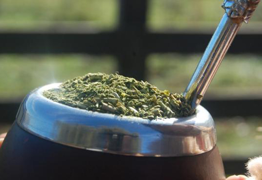

Desde tiempos antiguos, el mate fue más que una bebida: era un ritual de encuentro. Los pueblos originarios lo compartían alrededor del fuego, mientras hablaban de la tierra, los sueños y el camino de la vida. Con los años, el mate siguió siendo excusa y puente: en el campo, en las ciudades, en las rondas de amigos y familia. Hoy, como antes, el mate sigue reuniendo personas. Es pausa, conversación y silencio compartido; un momento para pensar, escuchar y filosofar sobre lo que somos y hacia dónde vamos. El mate no solo se toma: se comparte, y en ese acto, se crea comunidad.
En gran parte del Cono Sur, el mate se toma tradicionalmente amargo, especialmente en Paraguay, Uruguay, Argentina, sur de Brasil y Bolivia (Tarija y el Gran Chaco). Esta forma, conocida como cimarrón (o chimarrão en Brasil), es la más habitual y la más fiel a la tradición original. Tomarlo sin azúcar permite apreciar el sabor natural de la yerba y conservar mejor sus propiedades: es estimulante, antioxidante, digestivo y ayuda a mantener la concentración. Además, al no contener endulzantes, favorece un consumo más consciente y equilibrado, convirtiendo al mate amargo en un hábito saludable y sencillo, tanto para el cuerpo como para la mente.
En muchas regiones del sur de Sudamérica, el mate también se disfruta endulzado, una costumbre arraigada en zonas de Bolivia (Chaco de Santa Cruz, Chuquisaca y Tarija), Argentina (Santiago del Estero, Córdoba, Cuyo y el área metropolitana de Buenos Aires) y áreas rurales de Chile. A diferencia del mate amargo, en esta preparación se agrega azúcar o miel en cada cebada, generalmente al borde de la zanja que forma la bombilla, para no alterar toda la yerba. Endulzar el mate suaviza el sabor inicial, lo vuelve más accesible y amable para quienes recién comienzan, y transforma la ronda en un momento más relajado y afectivo. En muchas casas, el primer mate se endulza para “romper el amargor” y los siguientes se comparten más suaves, acompañando charlas largas, mates lentos y encuentros que invitan a la cercanía y la calma.
diferencia del mate amargo, esta variante se ceba con leche caliente y azúcar, lo que le da un sabor más suave y cremoso. Debido a que la leche dificulta la limpieza del mate y la bombilla, se suelen usar recipientes y bombillas distintas a las tradicionales. En Paraguay, esta preparación es conocida como mate dulce y puede hacerse con leche endulzada o azúcar dorada. En algunas versiones, la yerba se reemplaza por coco rallado, o se combina con la yerba colocándolo sobre ella, creando una infusión aromática y reconfortante que suele tomarse en momentos de descanso, especialmente en climas frescos o como bebida de abrigo.
El tereré, palabra de origen guaraní, es una bebida tradicional y muy consumida en Paraguay y en algunas provincias argentinas, especialmente en el nordeste y Entre Ríos. En Paraguay, el tereré es considerado un símbolo cultural y fue declarado Patrimonio Cultural Inmaterial de la Humanidad por la UNESCO. Se prepara con agua bien fría, yerba mate y hielo, a la que se le agregan hierbas refrescantes y medicinales, conocidas como remedios yuyos, como menta, cedrón, burrito, kokú, cola de caballo o cáscaras de limón. Otra forma popular es cebarlo con jugos naturales fríos de naranja, lima o limón, siempre con abundante hielo. La yerba se macera en agua fría, dando como resultado una bebida suave, refrescante y estimulante, ideal para los días de calor. Por su efecto hidratante y revitalizante, el tereré es una alternativa natural al mate caliente y una costumbre profundamente ligada a la vida social y al clima de la región.